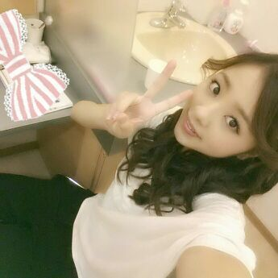
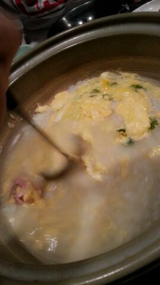
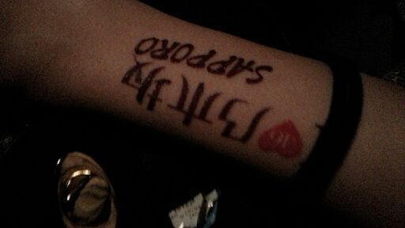
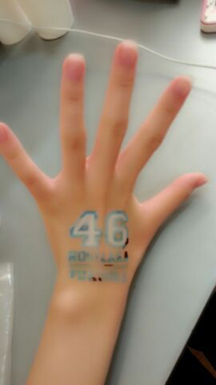

はろ〜ん♪
ろってぃ-やよ( 〃▽〃)

福岡live お疲れ様でした〜\(о´∀`о)/ ))
すっごく久しぶりに
巻き髪をしました！
昼の部は 編み込みストレートヘアー☆
夜の部は 編み込み巻き巻きヘアー☆
今回のliveは、
liveごとにセットリストが変わったり
ちょっとやり方や見せ方を
変えてみたりしているので
何度やっても見ても
あきないんですん(*´ω｀*)♪
納得の行くliveを皆で作り上げれる様、
まだ残っている、
大阪・名古屋・東京 ！！
６公演も全力で 頑張ります ！！！
live終了後は全員で晩御飯 。☆
めっちゃ食べましたぁ〜(о´∀`о)
最後は 雑炊でしめっ ！

ちはるが お母さんの様に
混ぜたり、お皿に分けてくれたよ(^ω^)
おいちくて幸せだった ))
乃木坂シール ))
ぢぢゃん !!

ぢゃーぢゃん !!

ではではっ、
明日は １日お仕事であります！
皆大好きよ (〃ω〃)
おやすみなさい♪のし